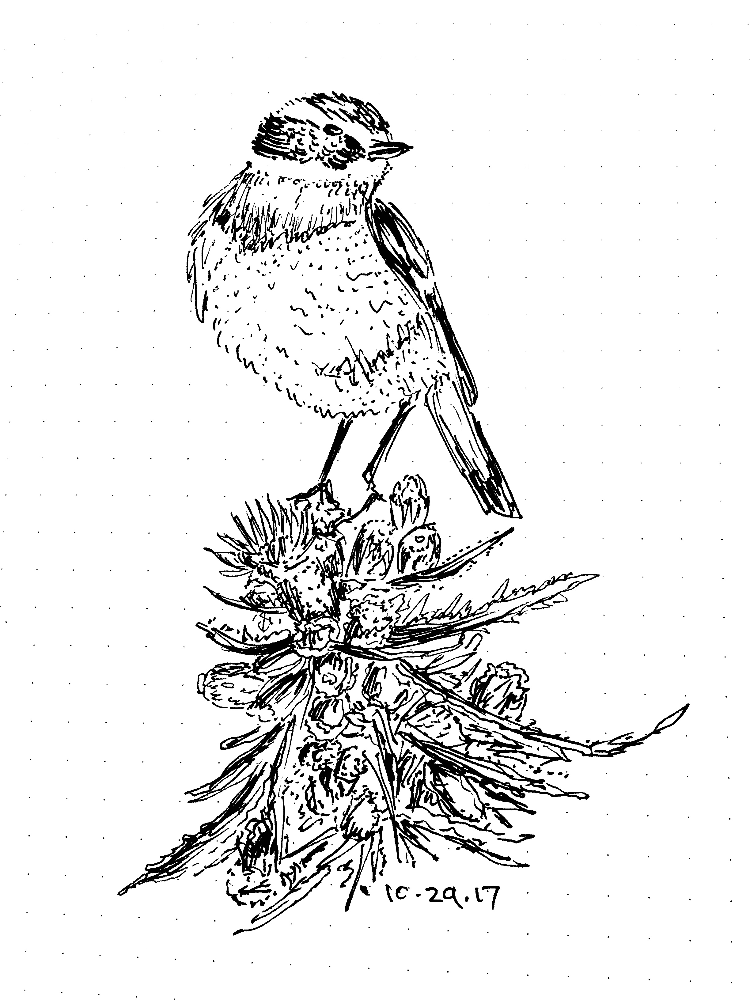
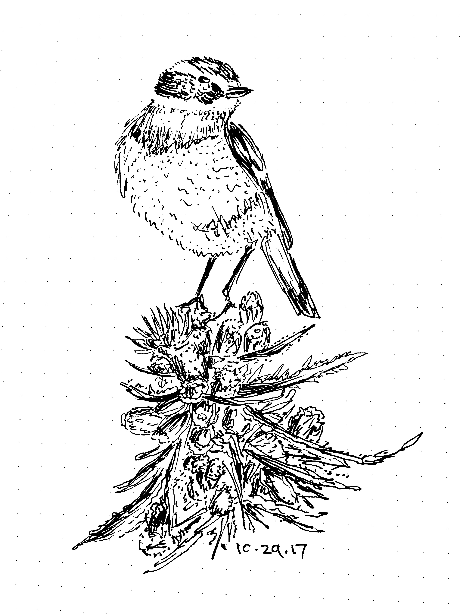
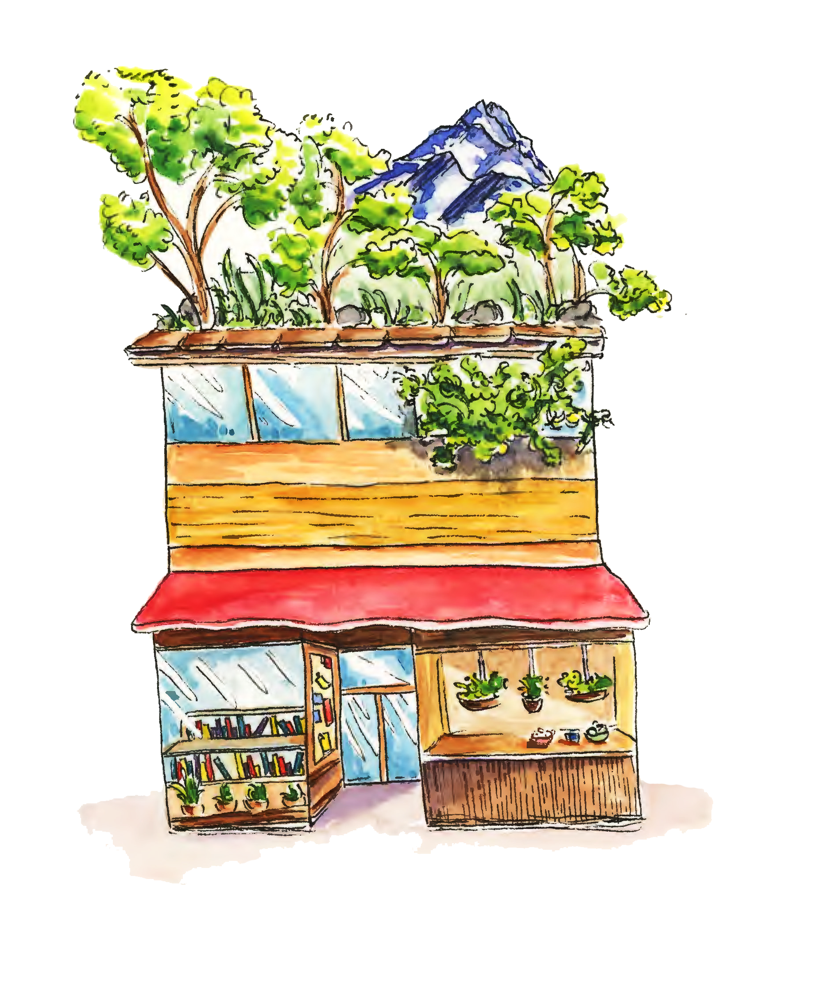
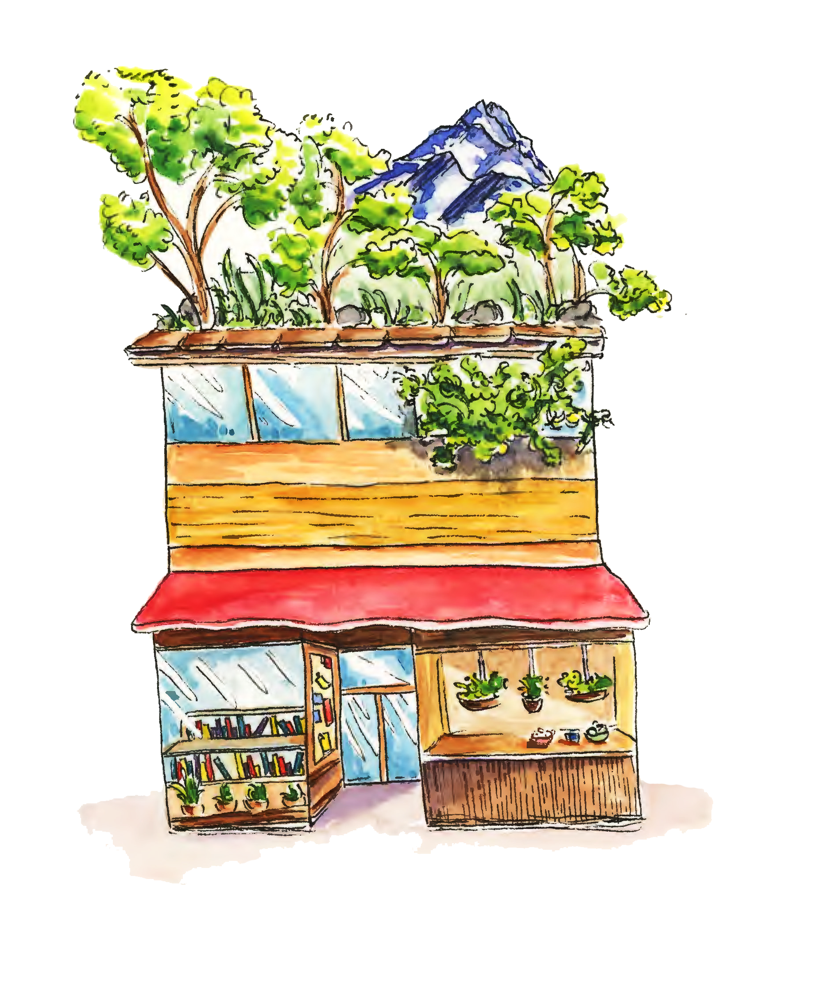

Sketchbook, Autumn 2017.
 

Watercolor and ink,Spring 2018.


Inktober, 2017 to Spring 2018


Inktober, 2019.
At the beginning of high school sophomore year, I bought my first sketchbook to do architectural studies of houses in Oak Park for a series of vignettes I was writing at the time. From this, I began incorporating sketching into my daily life. In spite of my lack of experience with fine arts for the most part, I fell in love with sketching with ink. Now, I draw daily -- most times, without aim.
My visual interests lie in creating surreal images by incorporating architecture with natural elements, or using visual art to supplement my writing. Additionally, I am a huge fan of typography and calligraphy. Before learning to read or knowing how to spell my full name, I had already learned cursive because I was captivated by its appearance. My pipe dream is to write a graphic novel. Until then, I should probably learn how to draw people :)